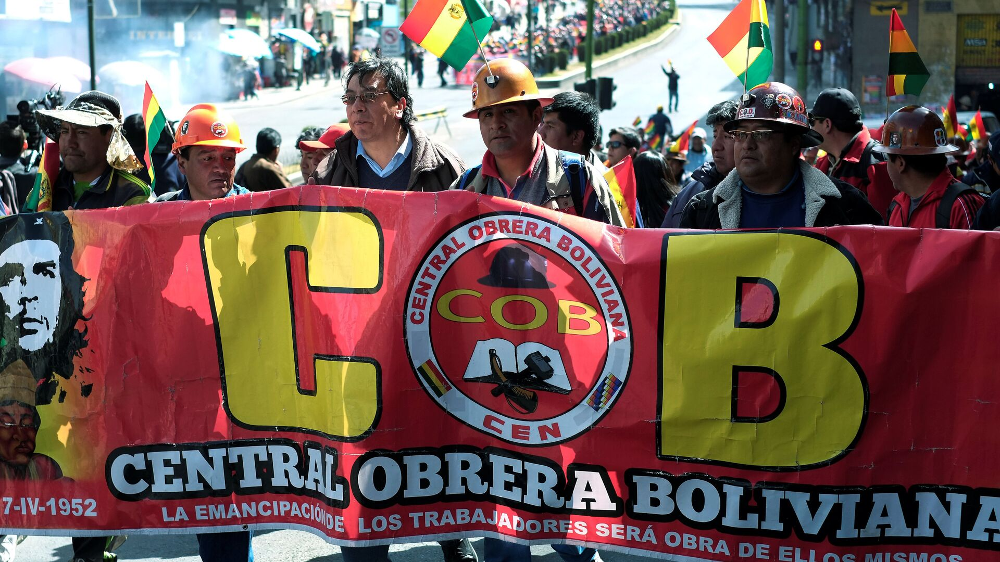
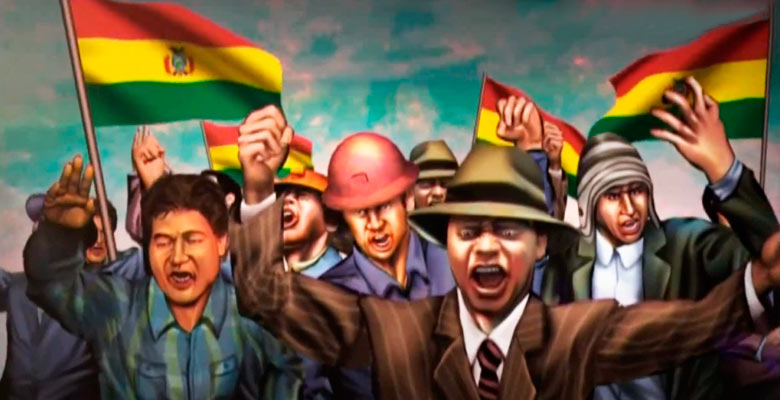

La Revolución boliviana de 1952, llamada también Revolución Nacional, fue el periodo de la historia de Bolivia en el que gobernó el Movimiento Nacionalista Revolucionario. Esta etapa se inició el 9 de abril, cuando una insurrección popular acabó con la Junta Militar que se había hecho cargo del país.
Las razones que llevaron al MNR al poder fueron, fundamentalmente, dos. El primero fueron los efectos que tuvo la Gran Depresión en la economía boliviana, mientras que el segundo fue la Guerra del Chaco, que hizo que los ciudadanos empezaran a cuestionar el sistema político del momento.
Las elecciones de 1951 fueron ganadas por el MNR, aunque sin mayoría absoluta. Sin embargo, la clase dirigente no aceptó ese resultado y entregó el poder a los militares. El 9 de abril de 1852 un levantamiento armado en el que participaron diversos sectores populares llevó a la presidencia a Víctor Paz Estenssoro.
Entre las medidas tomadas por el nuevo gobierno destacaron la implantación del sufragio universal, la nacionalización de las minas y una reforma agraria que trataba de dar solución a los problemas de los campesinos. En 1964, un golpe de Estado derrocó al gobierno del MNR, poniendo punto y final a la revolución.
Causas
La revolución de 1952 fue causada por varias razones, aunque la mala situación económica fue una de las que más pesó. A pesar de que el país había avanzado bastante, su estructura productiva, esencialmente agrícola, no era suficiente para que la población tuviera un nivel de vida aceptable.
Gran Depresión
La Crisis del 29, que comenzó en los Estados Unidos, se transformó pronto en lo que se ha conocido como Gran Depresión. Sus efectos llegaron a todas las partes del planeta, provoc”ndo la caída de las economías en muchos países.
En el caso de Bolivia, la crisis provocó un gran descenso de los precios de su mineral más valioso, el estaño. La merma de esta fuente de ingresos hizo que el país debiera declarar la suspensión de pagos de la deuda externa.
Guerra del Chaco
En 1932 comenzó un conflicto bélico entre Bolivia y Paraguay que duró casi tres años. El motivo fue la disputa por un territorio llamado Chaco Boreal.
Este enfrentamiento supuso que los dos países, que ya de por si eran de los más pobres de la región, gastaran una enorme cantidad de recursos.
Al final de la guerra, el tratado de paz concedió tres cuartas partes del territorio en disputa a Paraguay. Este resultado, unido con el mencionado gasto de recursos, provocó que parte de la población comenzará a poner en cuestión el modelo político.
La oligarquía dominante empezó a ser criticada por el resto de las clases sociales. Ante esto, los oligarcas optaron por imponer su poder mediante la represión. Durante unos años se sucedieron varios gobiernos encabezados por militares.
Por otra parte, la clase trabajadora empezó a organizarse de una manera más efectiva. Esto se vería de manera clara durante los días que significaron el triunfo de la revolución de 1952.
Causas sociales y económicas
La sociedad boliviana, aunque había avanzado en las décadas anteriores a la revolución, seguía manteniendo una estructura dominada por la oligarquía. La burguesía esa muy escasa y existía un gran número de campesinos indígenas sin apenas derechos.
Por otra parte, los trabajadores, sobre todo los mineros, habían empezado a organizarse y a exigir mejoras laborales.
Para 1950, la población boliviana se había duplicado desde principios de siglo. Aunque este fenómeno también afectó a las ciudades, el país seguía siendo muy rural. Se estima que el número de personas que trabajaba en el campo era superior al 70% de la población. La propiedad de esos terrenos estaba en manos de grandes terratenientes.
En cuanto a la gran actividad exportadora del país, la minería, estaba dominada por los llamados barones del estaño. El Estado solo se quedaba con una parte muy pequeña de los obtenido.
Características y desarrollo
El Movimiento Nacionalista Revolucionario, había sido fundando justo tras el fin de la Guerra del Chaco, cuando el país se encontraba en una crisis de confianza. Las clases dominantes, oligarcas, barones del estaño y grandes hacendados empezaron a ser criticados.
Este partido político apareció con la intención de defender los intereses de los trabajadores y las clases medias. Tenía también un fuerte contenido nacionalista y no descartaba la revolución como método para llegar al gobierno.
Elecciones de 1951
Las elecciones de 1951 se celebraron con la victoria del MNR, cuyo líder, Víctor Paz Estenssoro, se encontraba en el exilio. A pesar de que ganó con una diferencia notable en los votos, el partido no logró obtener la mayoría absoluta.
Antes de que se eligiera al Presidente, que debía salir de algunos de los tres partidos más votados, el entonces mandatario decidió entregar el poder a los militares.
Después de un año bajo el gobierno de una Junta Militar, el 9 de abril estalló la revolución. Todo comenzó cuando Antonio Seleme, general de policía, realizó un levantamiento armado. Seleme contó con la ayuda de siles Suazo y Juan Lechín, ambos dirigentes del MRN. Igualmente, los carabineros participaron en la insurrección.

Pronto se comprobó que este levantamiento contaba con mucho apoyo popular, especialmente entre los mineros y los obreros.El día 11, Lechín encabezó la toma del Cuartel de Miraflores y del Palacio Quemado. Con esto, el MNR alcanzó el poder el Bolivia. La revolución había terminado con 490 fallecidos, pero el ejército había sido derrotado. La Presidencia fue ocupada por Paz Estenssoro, que regresó al país para ocupar el cargo.
Primera Fase (1952-56)
El primer gobierno del MNR estuvo presidido por Paz Estenssoro. Durante esta etapa, la Central Obrera Boliviana tuvo una incidencia muy importante en las decisiones tomadas.
Fue durante esta legislatura cuando se aprobaron las medidas más importantes, desde la reforma agraria a la nacionalización de las mina.
Igualmente, el gobierno reformó por completo el estamento militar. La mayoría de los oficiales fueron sustituidos y se formaron milicias campesinas y urbanas que pasaron a realizar buena parte de las labores de las fuerzas de seguridad.
Paz Estenssoro emprendió una campaña de represión contra los grupos opositores. El que más la sufrió fue la Falange Socialista Boliviana, que había tratado de dar un golpe de Estado.
Segunda fase (1956-1960)
Las siguientes elecciones, celebradas en 1956, determinaron que Hernán Siles y Ñuflo de Chávez se hicieran con el poder en el país.
Durante este periodo destacó el gran aumento de la inflación. Estados Unidos y el FMI obligaron al gobierno boliviano a tomar medidas para controlar esa subida. Los obreros rechazaron el decreto que las dictaba, lo que se empezó a distanciar al MNR de las organizaciones sindicales.
Tercera Fase (1960 1964)
Las políticas anti-inflacionarias antes mencionadas llevaron a que el MNR se presentara dividido a las elecciones de 1960. Finalmente, los vencedores fueron Vïctor Paz Estenssoro y Juan Lechín.
Esto no impidió que las relaciones con los sindicatos fueran cada vez más tensa. En 1963, la Central Obrera Boliviana rompió relaciones con el gobierno y convocó varias huelgas en los meses siguientes.
En 1961, el gobierno aprobó una nueva Constitución. Uno de sus puntos era la legalización de la reelección presidencial, algo que Paz Estenssoro buscaba.
Las elecciones de 1964 arrojaron un resultado muy favorable al candidato del MNR. Sin embargo, en noviembre de ese mismo año fue derrocado por un golpe de Estado militar.
Ayuda de los EE.UU
Una de las características propias de la revolución boliviana fue que logró que los Estados Unidos apoyaran al gobierno surgida de ella.
A pesar de haber nacionalizado las minas, los estadounidenses consideraron al MNR como un movimiento nacionalista y no comunista. A lo largo de los años, ese apoyo se concretó en ayudas económicas y en el envío de comida cuando Bolivia tuvo problemas de escasez.
Central Obrera Boliviana
Entre las organizaciones que contaron con más influencia durante la revolución se encuentra la Central Obrera Boliviana. Esta fue creada en 1952, cuando varios sindicatos, de todos los sectores laborales, se agruparon en ella. Su primer líder fue Juan Lechín, quien, a su vez, ocupó el Ministerio de Minas y Petróleo en el primer gobierno de Paz Estenssoro.
Esta organización fue decisiva a la hora de empujar al gobierno a que nacionalizara las minas y las comunicaciones ferroviarias. Igualmente presionó para que la reforma agraria se convirtiera en realidad.
Durante las dos últimas etapas de la revolución, las relaciones de la Central Obrera y el gobierno empezaron a deteriorarse. Esto provocó que se convocaran varias huelgas en contra de algunas decisiones gubernamentales.
Consecuencias
De acuerdo a muchos historiadores bolivianos, los gobiernos de la revolución significaron un paso adelante para el país. Las políticas desarrolladas supusieron un gran cambio en todos los ámbitos.
Sufragio universal.- Una de las primeras medidas aprobadas por el gobierno del MNR fue la implantación del sufragio universal. Hasta julio de 1952, cuando se aprobó la medida, no podían votar ni analfabetos, ni indígenas ni mujeres. El número de electores aumentó en más de 800.000 personas.
Reforma del ejército.- Después de haberlo derrotado en las jornadas de abril de 1952, el nuevo gobierno emprendió una reforma en profundidad del ejército. Para empezar, legisló para que pasara de contar con 20000 efectivos a que solo tuviera 5000.

Otra medida fue la reducción del presupuesto destinado a las Fuerzas Armadas hasta dejarlo en un 6,7% del total. Para reemplazar a los militares se crearon milicias, tanto en el campo como en la ciudad. Estas tuvieron mucho poder hasta 1956. A partir de ese año fueron perdiendo prerrogativas en favor, de nuevo, del ejército.
Nacionalización de las minas
Antes de la revolución, las minas bolivianas estaban en manos de tres grandes empresas: Aramayo, Patiño y Hoschild). En un primer momento, Estenssoro no tenía claro si proceder a nacionalizarse, ya que, anteriormente, la postura del MNR había sido la de implementar más control por parte del Estado pero sin expropiarlas.
Su primera medida fue en ese sentido. El Presidente prefirió que el Banco Minero tuviera el monopolio de las exportaciones y que todas las divisas conseguidas se ingresaran en el Banco Central.
Sin embargo, la Central Obrera presionó para que se procediera a nacionalizar todos los yacimientos mineros. Paz Estenssoro seguía dudando, ya que temía la reacción exteriro, sobre todo la de los EE.UU.
Finalmente, el gobierno encargó a una comisión que estudiara como proceder. La conclusión fue que se podía llevar a cabo la nacionalización, siempre y cuando se compensara debidamente a las empresas.
Así, el último día de octubre de 1952, el gobierno oficializó la decisión. Desde ese momento, 163 minas pasaron a estar en manos del Estado, que creó la Corporación Minera de Bolivia para gestionarlas.
Reforma agraria
La estructura de propiedad de la tierra en la Bolivia previa a la revolución estaba dominada por los grandes terratenientes. El 70% de los terrenos de cultivo estaban en manos de solo un 4,5% de la población.
Los trabajadores, por su parte, padecían unas condiciones laborales miserables. Los indígenas, muy numerosos entre estos trabajadores, estaban obligados a llevar sus propias herramientas e, incluso, las semillas. Por otra parte, la productividad de las explotaciones agrícolas era realmente baja. De hecho, el país tenía que comprar al exterior gran parte de los alimentos que necesitaba.
Todo esto explica la necesidad de una reforma agraria que resolviera los problemas. Como ocurrió con las minas, el gobierno encargó a una comisión que estudiara cómo realizarla. Tras un tiempo de análisis, la ley se promulgó en agosto de 1952. Esta reforma agraria expropió gran parte de las tierras a los latifundistas, que fueron compensados económicamente. Los indígenas recibieron los terrenos, aunque se les impidió venderlas posteriormente.
A pesar de las buenas intenciones, la reforma agraria arrancó con muchas dificultades. No fue hasta después de 1968 cuando los resultados comenzaron a ser positivos.
Reforma educativa
Más del 65% de los bolivianos, según datos de 1952, eran analfabetos. El gobierno del MNR creó la Comisión Nacional de la Reforma Educativa para solventar esta gran carencia social. La legislación resultante pretendía extender la educación por toro el país. Los resultados fueron desiguales: en las ciudades la iniciativa se desarrolló con éxito, pero en el campo, a pesar de crecer el número de estudiantes, la educación impartida no tenía la calidad necesaria.